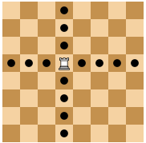
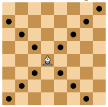
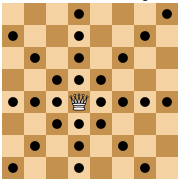
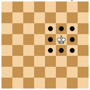
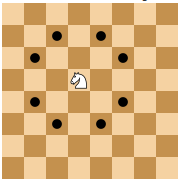
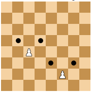
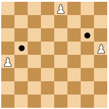
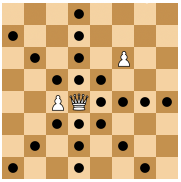
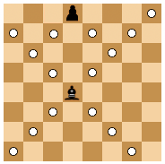
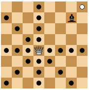

How to solve chedoku part 1 learning chess threat patterns
2023-01-23
Recently, I created Chedoku, a single-player puzzle game that is a mix of chess, sudoku, and minesweeper. After inventing the puzzle, I started wondering about algorithms for solving it. When I solve the puzzles myself, the first and simplest strategy I use is to look for obvious visual patterns. The different ways that chess pieces can threaten another field on the board create distinctive patterns in the game. For example, the rook has a vertical and horizontal pattern that looks like a cross.

The bishop has a diagonal pattern that looks like an X.

Queens have a combination of both rook and bishop, creating a dense pattern that attacks at many fields in the board.

A king has a square-shaped pattern.

A knight creates a semi-circular pattern.

And pawns threaten the two tiles diagonally in front of them.

Of course, the patterns can be cut off when a piece is placed in the edges or corners of the board or a corner.

In more complex puzzles, patterns can also be blocked by other pieces.

When black pieces occur in the game, they create negative numbers. By themselves, these also create distinctive visual patterns.

But when combining white and black pieces, the numbers can cancel each other out, creating empty squares that disrupt the patterns.

If you are still learning how chess pieces move, I recommend that you start with level 1 Chedoku puzzles. This will help you recognize the typical patterns more quickly. If you already know the basic movements of chess figures, I suggest starting with level 3 Chedoku puzzles and then adjusting the difficulty to find the level that is right for you!